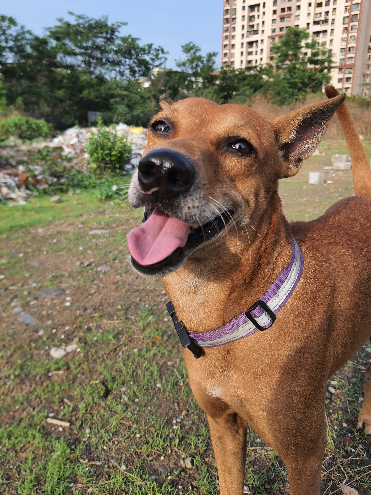

Adopt a Dog

Characteristics
- Loyal and protective companions
- Highly trainable and intelligent
- Require daily exercise and social interaction
- Come in a variety of breeds, sizes, and temperaments
- Can be great for kids and families
Rescue Guidelines
- Ensure the dog is healthy by getting a vet check-up
- Assess their behavior and socialization level
- Provide a calm and patient transition into the new home
- Have basic supplies ready (food, leash, bed, toys)
- Consider training and behavioral support if needed
Grooming Guidelines
- Brush regularly to remove loose fur and prevent matting
- Bathe once a month or as needed
- Clean ears and trim nails routinely
- Use dog-safe grooming products
- Check for fleas, ticks, or skin issues regularly
Fun Facts About Dogs
- Dogs can learn over 100 words and gestures!
- Their noses have up to 300 million smell receptors.
- Each dog’s nose print is as unique as a human fingerprint.
- Dogs dream just like humans—watch them twitch while sleeping!
- They’ve been humans’ best friends for over 14,000 years.